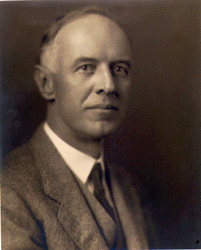

|
By the end of the seventeenth century, the New World tobacco planter aristocracy
had no doubts about the profitability of their huge tracts of land and gangs of
slaves. A quarter-century later, however, conditions had changed. If some
colonists, such as the Quakers, had always attacked slavery on moral grounds,
many American revolutionaries found slavery to be morally incompatible with
their talk of liberty, equality, and freedom. Others, more concerned with
economics than morals, also had doubts about slavery. Facing declining tobacco
prices, deteriorating land, mounting debt, and competition from newly opened
lands, they agreed with George Washington, who in 1794 called slaves "a very
troublesome species of property." Some advocated emancipation followed by
colonization to rid the new nation of an economic burden and an alien race. Yet,
as Thomas Jefferson noted in 1786, most Southerners opposed emancipation. Slaves
could still produce profits on new lands, and many landowners in the older areas
hoped that a rise in tobacco prices would restore the value of their slaves.
|
The cotton gin, invented by Eli Whitney,
made Southern slavery viable into the nineteenth century.
|
But it was cotton, not tobacco, that ended whatever doubts remained about the
value of slave labor. Cotton prices rose sharply as the demand of the growing
textile industry outstripped traditional sources of supply. The South--with the
climate and soils that produced high-quality cotton, a location accessible to
consuming markets in England and Europe, and Eli Whitney's cotton gin to
separate cheaply and efficiently the sticky seeds from the staple--quickly became
the world's primary cotton producer. The rapidly expanding Cotton Kingdom
breathed new life into what had once seemed to be a dying slave system. By the
beginning of the nineteenth century sentiment among slave owners for
emancipation had evaporated.
Criticism of slavery continued, of course. Abolitionists, along with many
others, termed the peculiar institution morally reprehensible, and Free Soilers
opposed its expansion into new territories, fearing that slave owners would
monopolize the best lands and prevent the spread of small farms. But these
critics seldom condemned slavery as an unprofitable investment. Indeed, implicit
in the moral condemnation of slavery was the view that slave owners derived
their profits by depriving their workers of their freedom, by buying and selling
them in the marketplace, and by forcing them to work hard and long by the
vicious and unrelenting use of the lash. Such critics condemned not profits but
the means by which slave owners earned them.
Some critics of slavery, such as Solon Robinson and Frederick Law Olmsted, added
an economic attack to their moral condemnation, noting that slave labor was less
profitable than free labor, a view, ironically, that some Southerners accepted
in the course of their ardent defense of slavery. James Henry Hammond, owner of
a large South Carolina plantation, for example, admitted that slave labor was
less productive than free labor, but neither he nor other Southerners, such as
political economists Jacob N. Cardozo and Thomas Roderick Dew who shared this
opinion, found this reason enough to condemn the institution. On the contrary,
they, along with other proslavery advocates, proclaimed that slavery
economically benefited the South, the nation, the world, and even the slaves
themselves. Slavery, they argued, transformed ignorant and inferior African
savages into efficient workers who produced a crop that enriched the section and
the nation and provided the raw material to clothe the world. According to these
writers, slavery mitigated the class conflict endemic in a free labor society by
uniting whites on the basis of race, by providing non-slaveholders with ample
opportunities for social mobility through the purchase of slaves, and by
shielding slaves, who were valuable property, from the privations that were so
often the lot of the wage worker in the North.
When slavery's defenders conceded that slaves were not the most profitable
investment available, they implied that high returns on investment were not
their major concern. Indeed, they charged, many of slavery's benefits arose from
the fact that most planters were not primarily motivated by profit maximization
as were Yankee employers of free labor. The Alabamian Daniel Robinson Hundley,
in his analysis of the Social Relations in Our Southern States (1860),
roundly criticized the "Southern Yankees," those few planters who, unlike the
"gentlemen," adopted the Northern practice of putting profits above all other
considerations.
Not everyone agreed that the slave system was economically beneficial.
Southerners such as Hinton Rowan Helper, Daniel Reaves Goodloe, George Tucker,
and Cassius M. Clay; Northerners such as Daniel Raymond and Frederick Law
Olmsted; and foreigners such as the British political economist, J. E. Cairnes
all indicted slavery for causing Southern economic backwardness. Slavery, they
argued, degraded labor, kept wages low, produced a shallow market, blocked
industrial and commercial development, prevented the spread of scientific
agriculture, absorbed capital that might have been available for other
investments, discouraged immigration, and created an arrogant and menacing
ruling class.
Thus, the antebellum dispute over the profitability of slavery centered almost
exclusively on the economic effects of slavery and gave scant attention to the
question of returns to slave owners on their investment. Critics and defenders
alike agreed that slavery was more than a particular means to organize labor. It
was the basis for a particular social system. By mid-century, Americans,
Northerners and Southerners alike, defined and sharply contrasted the Northern
free labor system and the Southern slave labor system.
Although slavery's defenders and its critics came to diametrically opposed
conclusions, their arguments and the data used to support them were not always
mutually exclusive. Ulrich B. Phillips, a Southerner squarely in the Progressive
tradition, incorporated many of the arguments of both sides in his early
twentieth-century studies of slavery, including American Negro Slavery
(1918) and Life and Labor in the Old South (1929). Phillips noted that
when the plantation system, an effective means to organize and supervise
unskilled labor, became inseparable from slavery, a means to capitalize labor,
the resulting slave system had pernicious economic effects. Because the planter
had to buy his labor force, his wage bill, instead of being short-term operating
capital as in a free labor system, became a long-term capital investment,
absorbing capital resources that might otherwise have been available for
investment in commerce, banking, manufacturing, and agricultural improvements.
With so much capital tied up in labor, Phillips explained, Southerners had to
turn to the North for credit, manufactured goods, shipping, and other services,
thereby draining additional resources from the region and compounding the
capital shortage. Unable to diversify its economy, the South remained poor,
backward, and dependent upon the North.
The slave plantation, Phillips admitted, was an efficient unit of production and
"a school constantly training and controlling pupils who were in a backward
state of civilization." Rationally routinized tasks and strict supervision,
combined with careful attention to the health and well-being of the slaves
turned what Phillips deemed ignorant, unskilled laborers into productive
workers. But success became an economic liability. If the plantation was a
school, the slave system prevented apt students from ever graduating. Because
they were enslaved, efficient workers never could become independent farmers;
because efficient production required closely supervised unskilled labor,
planters had no incentive to teach skills to good workers or encourage ideas of
independence among them; and because the plantations were more efficient than
small farms, they drove small farmers out of the best lands.
Phillips thus combined those arguments of slavery's defenders that emphasized
efficiency and good treatment of the slaves with those arguments of slavery's
critics that emphasized the detrimental effects of slavery on Southern economic
development. In addition, however, he raised the issue of the profitability of
slavery as an investment, a matter largely ignored by antebellum disputants.
Phillips argued that the capitalization of labor continually absorbed the slave
owners' profits, a loss that increased as slave prices rose. By the end of the
1850s, he said, only the most efficiently supervised plantations on the best
lands were profitable.
|

The ideas of Ulrich B. Phillips, though discredited today,
shaped historians' thinking about slavery for decades.
|
Slavery persisted, Phillips explained, despite its economic costs, because it
was a necessary means to control an inferior and potentially dangerous race and
because it was the basis for an attractive and popular social system. Thus, like
slavery's antebellum supporters, Phillips suggested that profit maximization did
not motivate the slave owners. Slavery, he wrote in 1918, "was less a business
than a life; it made fewer fortunes than it made men."
Phillips's work was enormously influential. Supported during the 1920s and 1930s
by studies of North Carolina, Georgia, Mississippi, and Alabama, Phillips's
interpretation became so widely accepted during the first four decades of the
twentieth century that it not only became what later critics dubbed the
"traditional" interpretation, but it also set out the main themes that later
historians, including Phillips's most ardent critics, continue to debate to this
day.
Robert R. Russel and Lewis Cecil Gray were among the first of Phillips's
critics. They questioned parts of Phillips's interpretation as early as the
1930s by denying that slavery was an unprofitable investment. They insisted that
because slavery was so profitable, Southerners concentrated on staple crop
production and refused to invest in manufacturing and commerce. During the 1940s
others maintained that Phillips and his followers had miscalculated income and
costs. These critics insisted that more accurate figures showed that planters
indeed earned a good profit from their investment in slaves.
By the 1950s historians were completely rewriting the history of slavery and
questioning virtually every aspect of traditional views, including the question
of profits. Kenneth M. Stampp, in his major revisionist study The Peculiar
Institution (1956), insisted that as a business, slavery was profitable for
all ''but the most hopelessly inefficient masters." Two years later, economists
Alfred H. Conrad and John R. Meyer presented detailed statistics showing that
planters' profits were as high as those derived from investments elsewhere in
the nation. The South's comparative advantage lay in staple crop agriculture,
they concluded; Southerners neglected manufacturing and commerce because land
and slaves proved more profitable.
In finding slavery to be a profitable investment, the revisionists had not only
reversed Phillips's calculations, they had also changed his emphasis. Phillips,
like the antebellum critics and supporters of slavery, had concentrated on the
effects of slavery as an economic system. The revisionists, on the other hand,
had confined their analysis to returns on investment. Implicit in the
revisionist argument was the assumption that slavery did not create a peculiar
system, but was merely a peculiar institution within American capitalism.
Planters, like profit-maximizing businessmen elsewhere in the nation, chose the
most profitable investment available to them.
Robert W. Fogel and Stanley L. Engerman in their two-volume Time on the
Cross (1974) made this assumption explicit and central in their analysis.
But their revisionism went much further: they denied that the slave South was
economically backward and stagnant. Drawing on the per capita income data
assembled by Richard A. Easterlin, Fogel and Engerman argued that the region was
not poor in comparison to the nation as a whole and, more important, the South's
rate of growth did not lag behind that of the rest of the nation.
This changed the terms of the old profitability argument altogether. Where
others had sought to explain Southern economic backwardness either by blaming or
by exonerating slavery, Fogel and Engerman found the region's economy healthy
and vigorous because of slavery, especially on the larger plantations where
economies of scale proved possible. Southern planters were bourgeois businessmen
of the highest order, they said, seeking and achieving profit maximization
through the careful organization of production. Slaves in fact proved more
efficient than free workers in the North because they could be worked more
efficiently and at a greater intensity. Slave plantations, wrote Fogel and
Engerman, were like "factories in the field." Significantly, the two economists
returned the debate to the older issue of the profitability of slavery as a
system rather than as a form of investment. They found slaves to be a profitable
investment, but this was only an aspect of their larger argument that the
economic system and the prevailing ideology in the South differed little from
that of the North.
Eugene D. Genovese, a historian who was also concerned with the nature of the
slave system, sharply disagreed. Slavery, he argued in a series of books (The
Political Economy of Slavery [1965], The World the Slaveholders Made
[1969], and Roll, Jordan, Roll [1974]), created a unique society and
economy in the South. Part of the United States and a participant in the world
market, the South had much in common with the North and the rest of the
mid-nineteenth century Western capitalist world. But more important than
similarities were differences arising from the absence of free labor. According
to Genovese, slavery produced a pre-bourgeois or pre-capitalist society with its
own class structure, ideology, and legal institutions.
Under this system slave owners became rich and powerful, dominating antebellum
Southern society, subordinating merchants, bankers, and incipient manufacturers
as they established their ideological hegemony in the South. Southern economic
development--in contrast to growth in income--lagged, Genovese argued, because the
dominant planters blocked it, fearing, with good reason, that development would
undermine their ideological hegemony and eventually destroy the slave system
they controlled. They realized that economic development would produce powerful
new classes of industrialists and free workers who would clash with and
ultimately overwhelm the planters. The slave owners had only to look to the
North to see the dismal future that awaited them if they allowed economic
development in their section.
In a sense, the profitability debate has come full circle, returning to the
issues in the antebellum dispute. Both Fogel and Engerman and Genovese, despite
the differences in their methods and conclusions, view the question as a matter
of political economy just as the antebellum disputants did. When Phillips raised
the matter of returns on investment, he opened a very different sort of debate.
Scholars then argued over production costs, interest rates, risk levels,
depreciation, and other accounting matters without being aware, it would seem,
that by making such issues paramount they assumed that the return on investment
was central to the debate. When the revisionists found profit rates to be high,
they were convinced that they had found the source of the planters' behavior;
they assumed that high profit rates meant that the planters were rational,
bourgeois businessmen motivated by profit maximization. Only if Southerners
continued to invest in an unprofitable enterprise would it appear that they were
motivated by goals that modern economists term "irrational," and only then, it
seems, would it be necessary to find a different motivation for behavior.
Fogel and Engerman, correctly recognizing that the question of the profitability
of slavery is inextricably linked to the larger question of the nature of
Southern society, attempted to describe the links and thereby to prove what
others had assumed. Genovese, however, found different connections. Although he
raised doubts about the work of Conrad and Meyer and others who contended that
investment in slaves was profitable for the planters, Genovese insisted that
profits were irrelevant, whatever their levels, because high profits in the
bourgeois accounting sense were not the planters' primary goal. Thus, both Fogel
and Engerman and Genovese in very different ways explicitly recognized that the
profitability debate inevitably involves far more than economics and the
measurement of profit and loss. It turns on matters of politics, class
relations, and ideology.
Although the long dispute over the profitability of slavery remains unresolved,
recent work has clarified the issues by making assumptions explicit and by
suggesting new questions and new approaches to answer them. That the South was
different or distinct is indisputable; how different and how distinct remains
the central issue in the continuing debate over the profitability of slavery.
Source: Randall M. Miller and John David Smith, eds. Dictionary of
Afro-American Slavery (Westport, CT: Praeger, 1997), 592-97.
|